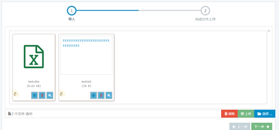

bootstrap-fileinput是一款非常优秀的HTML5文件上传插件，支持文件预览、多文件上传等一系列特性。
一款非常优秀的HTML5文件上传插件，支持bootstrap 3.x 和4.x版本，具有非常多的特性:多文件类型上传。这个插件能最简单的帮你完成文件上传功能，且使用bootstrap样式。还支持多种文件的预览，images, text, html, video, audio, flash。另外还支持ajax方式上传文件，可以看到上传进度。支持拖拽的方式添加和删除文件。
注意
这个插件的最新版本是v4.4.0（开发中）。 有关详细信息，请参阅更改日志。 插件特性主要有两方面：
1、 该插件将一个简单的HTML文件输入转换为高级文件选择器的控件。在不支持JQuery或Javascript的浏览器中将帮助回退到普通HTML文件输入。
2、 文件输入由以下三个部分组成，每个部分都包含用于控制显示的选项和模板：
3、 如果设置<input>标签的class属性为file，该插件将自动将它转换为type属性为file的高级文件输入选择器。高级文件输入选择器的所有参数都可以通过HTML5的data-*属性传递。
4、 能够选择和预览多个文件。使用HTML5文件阅读器API来读取和预览文件。在选择多个文件的情况下显示正在加载到预览区域的每个文件的进度。
5、 提供预定义的模板和CSS类，可以根据您的需要更改您的文件输入显示风格。
6、 能够配置插件初始化具有初始标题的images/files类型文件预览 （对于记录更新场景很有用）。initialPreview、 initialPreviewConfig 和initialCaption 属性来配置它。
7、 能够将简要预览内容缩放为详细预览。在预览中查看缩放内容的幻灯片，最大限度地实现无边界或全屏预览。
8、 能够通过拖放操作在初始预览中对内容进行排序/重排。
9、 能够完全主题化控件，并控制样式和布局。
10、 通过语言/翻译支持同一页面上的多语言控件。
11、 显示/隐藏任何或所有以下内容的选项：
12、自定义显示整个插件，标题容器，标题文本，预览容器，预览图像和预览状态的目标容器元素的位置。
13、 对于文本文件预览，将文本自动缩隐为缩略图宽度，并显示一个缩略指示器链接，以便在悬停时显示完整的文本。您可以自定义缩略符（默认为...）。
14、 自定义预览，进度和所选文件的消息。
15、上传操作默认为表单提交。支持用于自定义基于ajax的上传的route/server上传动作参数。
16、 触发JQuery事件进行高级开发。目前可用的事件有filereset、fileclear、filecleared、fileloaded，和fileerror。
17、 支持输入禁用文件和只读文件。
18、 动态自动调整文件名长度超过容器宽度的文件标题。
19、 当预览容器上完全载入图像后，触发的新的fileimageuploaded事件。
20、 当预览图超过预览容器的大小时自动调整预览图像。
21、 完全模板化和可扩展，允许开发人员以自己想要的方式配置文件输入。
22、 基于各种文件预览类型智能化预览。内置的文件支持类型分类为image、text、html、video、audio、flash、object和other。
23、allowedPreviewTypes:你可以配置哪些文件类型被允许预览显示。默认值为['image', 'html', 'text', 'video', 'audio', 'flash', 'object']。因此，默认情况下，所有文件类型都将被视为要预览的对象。 举个例子，如果只想展示图像和视频的预览，就将这个参数设置为['image', 'video']。如果要禁用所有文件类型的内容预览，并用预览图标代替缩略图，请将其设置为null、empty或false。
24、allowedPreviewMimeTypes:除了参数allowedPreviewTypes，你还可以控制哪些互联网媒体类型可以预览。它的默认值为null，表示支持所有互联网媒体类型。请注意： 使用版本2.5.0，你可以通过设置allowedFileTypes和allowedFileExtensions参数来控制允许上传的文件类型或扩展功能。
25、 layoutTemplates:允许你通过一个属性来配置所有布局模板设置。可配置的布局对象有：main1、main2、preview、caption和 modal。
26、 previewTemplates:所有用于每个预览类型的预览模板已被组合成一个属性，而不是单独用于图像，文本等内容的模板。表示格式的键为allowedPreviewTypes，值表示预览模板。下面是每个预览文件类型（generic、image、text、html、video、audio、flash, object和other）。generic模板仅用于使用直接的标签来展示initialPreview内容。
27、previewSettings:允许你为每个预览图像类型配置宽度和高度。该插件对每个类型都具有默认的宽度和高度预定义，这些类型有image、text、 html、video、audio、flash和 object。
28、 fileTypeSettings:允许你使用回调函数配置和识别每个预览文件类型。该插件有默认的回调函数预定义来识别不同类型，这些类型有image、text、 html、video、audio、flash和 object。
29、使用模板替换标签已被增强。使用此版本，它将自动检查每个多次出现的标签替换的为模板字符串。
30、操作事件，并轻松地在任何中止上传的事件返回的输出中添加您自己的自定义验证消息。
31、支持翻译和语言环境。
注意
Flash预览需要安装Shockwave flash并且客户端浏览器支持它。Flash预览目前只能与webkit浏览器成功运作。支持HTML5 video/audio标签的所有现代浏览器都支持视频和音频格式预览。请注意，浏览器的HTML5视频元素支持的视频/音频格式数量有限（例如mp4，webm，ogg，mp3，wav）。视频文件推荐使用小视频（通过maxFileSize 属性进行控制），这样不会不影响预览效果。你可以从插件库的examples目录下复制几个文件，来测试一些Flash和视频文件的示例。
伴随着版本4.0.0，插件现在也包括内置AJAX上传支持和有选择地添加或删除文件。AJAX上传功能基于HTML5 FormData和XMLHttpRequest Level 2标准。大多数现代浏览器都支持此标准，但插件在不支持的浏览器中将自动降级为正常格式提交。
HTML5 FormData大多数现代浏览器支持）上传方式。如果不支持，将降级到正常的基于表单的文件提交。uploadUrl属性。DRAG & DROP区域来拖放和附加文件。New DRAG & DROP zone available in preview to drag and drop files and append.showPreview设置为false，或者未设置uploadUrl，插件将降级到基于正常的form形式上传。HTML5和jquery功能优化上述功能的性能。可以使用以下方法之一自动或手动安装该插件：
通过bower包管理器进行安装，运行下面简单的指令：
$ bower install bootstrap-fileinput
通过Composer包管理器进行安装，运行指令：
$ php composer.phar require kartik-v/bootstrap-fileinput "dev-master"
或者添加：
"kartik-v/bootstrap-fileinput": "dev-master"
到你的composer.json文件中。
依赖项
该插件使用HTML5功能来实现各种功能。大多数现代浏览器支持这些功能。但是，要知道你的浏览器是否支持这些功能，你必须在下面运行这些检查。以下是检测浏览器是否支持
|
功能 |
描述 |
支持 |
|
文件输入多个 |
允许用户使用本机HTML文件输入选择多个文件 |
|
|
HTML5文件API |
允许使用插件在预览窗格上阅读和预览文件 |
|
|
HTML5 XHR2和FormData |
允许使用ajax上传功能来附加/删除文件并使用进度条进行跟踪。 |
|
|
HTML5拖放 |
能够将文件拖放到一个Dropzone（仅适用于使用HTML5 XHR2的ajax上传） |
|
|
HTML5画布 |
通过JavaScript管理图像文件。如果你希望在上传之前调整图像文件的大小，则必需支持此功能。 |
大多数情况下，该插件可以配置为以下两种不同的模式之一进行上传。
重要信息：不要尝试组合下列模式来接收文件数据，因为您将收到不一致和/或错误的输出。
1、表单提交：在此模式下，您不能设置uploadUrl属性。该插件将使用本地文件输入来存储文件，并且可以在正常的from提交后读取文件（您必须在form中包含类型为file的input标签）。这对于单个文件上传或简单的场景多个文件上传是有用的。配置非常简单，你可以从本机表单提交中读取POSTED的所有数据。但是，请注意，本地文件输入是只读的，不能被外部代码修改或更新。特别是对于多个文件输入选择，无法将单个文件增加到已选择的文件列表。如果尝试在已选择的文件输入按钮上再选择文件，它将覆盖并清除之前选择的文件。同样，在此模式下，无法选择移去/删除上传之前添加的文件。
2、Ajax提交：在此模式下，你必须将uploadUrl属性设置为有效的ajax处理服务器action/URL。如果uploadUrl设置了，那么该插件会自动为该场景使用ajax上传。该插件提供了ajax提交的高级功能，这是表单提交提供不了的。如拖放文件，在预览区域中添加/删除文件，获取上传的进度条等功能只有在此模式下才可以实现。您的浏览器必须支持HTML5 FormData/XHR2才能正常工作，并且处理ajax调用的服务器代码必须返回有效的JSON响应。
注意 作为高级场景，插件允许你处理ajax上传，即使没有选择文件，但是使用有效的uploadExtraData也会得到ajax响应。这些事件filebatchpreupload、filebatchuploadsuccess、filebatchuploadcomplete或 filebatchuploaderror将在这种情况下触发。即使没有任何的文件数据，它将允许发送额外的数据。
|
功能/要求 |
表格提交 |
Ajax提交 |
|
支持单个和多个文件上传 |
支持 |
支持 |
|
使用HTML 5 FileAPI预览文件 |
支持 |
支持 |
|
通过表单提交直接读取文件 |
支持 |
不支持 |
|
每个预览缩略图的单个文件删除图标 |
支持 1 |
支持2 |
|
每个预览缩略图的个人文件上传图标 |
不支持 |
支持 |
|
需要从服务器返回有效的JSON响应 |
不支持 |
支持 |
|
需要浏览器支持HTML5 FormData / XHR2 |
不支持 |
支持 |
|
服务器代码来处理ajax并发送JSON Response |
不支持 |
支持 |
|
使用放置区拖放文件 |
不支持 |
支持 |
|
能够将文件附加到已选择的列表 |
不支持 |
支持 |
|
能够将文件删除到已选择的列表 |
支持 1 |
支持 |
|
上传进度栏 |
不支持 |
支持 |
|
阅读其他表单数据 |
直接通过表单提交 |
通过 |
initialPreviewConfig（仅适用于服务器上传的文件）。initialPreviewConfig）和客户端选择的文件。注意
如果你将一个css class='file'属性赋予input标签，插件将自动把字段[input type="file"]转换为文件输入控件。但是，如果你想通过javascript单独初始化插件，那么请勿将css class='file'属性附加到'input'上（因为这将导致重复的初始化，并且JavaScript代码可能会被跳过不执行）。
在网页头部加入链接。
<link href="https://maxcdn.bootstrapcdn.com/bootstrap/3.3.6/css/bootstrap.min.css" rel="stylesheet"><link href="path/to/css/fileinput.min.css" media="all" rel="stylesheet" type="text/css" /><script src="//ajax.googleapis.com/ajax/libs/jquery/2.1.1/jquery.min.js"></script><!-- 如果你想在上传之前修改图片大小需要加入canvas-to-blob.min.js 它必须在fileinput.min.js之前引入 --><script src="path/to/js/plugins/canvas-to-blob.min.js" type="text/javascript"></script><!-- 如果你想在最初的预览中排序/重新排列需要引入sortable.min.js 它必须在fileinput.min.js之前引入 --><script src="path/to/js/plugins/sortable.min.js" type="text/javascript"></script><!-- 如果你想在HTML文件预览中净化HTML内容则要引入purify.min.js is 它必须在fileinput.min.js之前引入 --><script src="path/to/js/plugins/purify.min.js" type="text/javascript"></script><!-- 主要的 fileinput 插件库 --><script src="path/to/js/fileinput.min.js"></script><!-- 如果你想在放大的模态页面中查看文件详细信息需要引入bootstrap.js --><script src="https://maxcdn.bootstrapcdn.com/bootstrap/3.3.6/js/bootstrap.min.js" type="text/javascript"></script><!-- 可选，如果你需要像font awesome 这样的主题，就像下面的代码一样引入它 --><script src="path/to/js/fa.js"></script><!-- 可选，如果你需要转换语言或翻译，就包含这个库 --><script src="path/to/js/<lang>.js"></script>你可能注意到了，除了fileinput.min.css和fileinput.min.js外，你必须要加载jquery.min.js和bootstrap.min.css。可选择加入fa.js主题文件来使用font awesome图标样式。
GitHub 地址：https://github.com/kartik-v/bootstrap-fileinput
可选的依赖插件
<script src="~/Scripts/bootstrap-fileinput-master/js/fileinput.min.js"></script>
<script src="~/Scripts/bootstrap-fileinput-master/themes/explorer/theme.js"></script>
<script src="~/Scripts/bootstrap-fileinput-master/js/locales/zh.js"></script>
在你的页面中初始化这个插件，像下面的样例代码一样： JavaScript // 使用默认参数初始化插件 $("#input-id").fileinput();
$fileinput.fileinput({
language: 'zh', //设置语言
//theme: "explorer",
uploadUrl: "/api/datareportapi/upload",
allowedFileExtensions: ['xlsx','txt','zip','rar'],//接收的文件后缀
uploadClass: "btn btn-sm btn-success",
removeClass: "btn btn-sm btn-danger",
cancelClass: "btn btn-sm btn-default",
browseClass: "btn btn-sm btn-primary", //按钮样式
enctype: 'multipart/form-data',
minFileCount: 1,
//maxFileCount: 5,
overwriteInitial: false,
previewFileIcon: '<i class="fa fa-file"></i>',
uploadExtraData: function (previewId, index) {
return { batch: _configMap.batch, type: _configMap.type };
},
preferIconicPreview: true, // this will force thumbnails to display icons for following file extensions
previewFileIconSettings: { // configure your icon file extensions
'xls': '<i class="fa fa-file-excel-o text-success"></i>',
'xlsx': '<i class="fa fa-file-excel-o text-success"></i>'
},
previewFileExtSettings: { // configure the logic for determining icon file extensions
'xls': function (ext) {
return ext.match(/(xls|xlsx)$/i);
}
}
})
// 使用插件参数初始化 $("#input-id").fileinput({'showUpload':false, 'previewFileType':'any'});
`#input-id`是你页面中`input`标签（即，`type=file`）的id值，通过插件初始化这个标签会自动隐藏。## 步骤 2或者，你可以直接将插件选项设置为任何输入，通过HTML5的`data-*`属性到你的输入域。```html<input id="input-id" type="file" class="file" data-preview-file-type="text">
最后呈现效果图如下:

你需要设置服务器方法通过AJAX来解析并返回正确的响应。你可以按异步或同步模式设置上传，如下所述。
这是默认模式，也就是说uploadAsync属性设置为true。当上传多个文件时，异步模式允许触发并行调用服务器方法接受每个上传文件。您可以通过设置maxFileCount属性来控制一次允许上传的最大文件数。在异步模式下，预览中每个缩略图的进度被验证和更新。
你设置的服务器方法（uploadUrl）从插件接收以下数据:
文件数据:以与form文件输入非常相似的格式将这些数据发送到服务器。例如，在PHP中，你可以使用代码$_FILES['input-name']读取文件数据，input-name是你的input标签的name属性。如果你没有为input标签设置name属性，则它的名称默认为file_data。请注意，多个文件上传需要你为input标签设置multiple属性为true。这样在PHP中你会收到文件数据$_FILES['file_data']。（servlet中使用request.getParts()获取多个文件数据，使用request.getParts("input-name")获取单个文件）
额外的数据：该插件可以向你的服务器方法发送附加数据。这可以通过将uploadExtraData设置为键值对关联数组对象来完成。所以如果你设置uploadExtraData={id:'kv-1'}，在PHP中你可以以$_POST['id']的方式读取这些数据。
注意
在异步模式下，你会经常在处理ajax上传的服务端接收到单个的文件数据。基本上，这个插件对每个上传的文件都会触发并行的ajax调用方法。你需要相应地编写服务器上传逻辑，以便您始终读取和上传单个文件。同样，在下面的发送数据部分中，你必须返回一个initialPreview，它反映收到的单个文件的数据。
你的服务器方法（uploadUrl）必须返回一个json编码对象数据。在这种情况下，您可以发送这4个信息。请注意，在异步模式下，您会始终从服务器收到一个文件的记录 - 因此你也要相应地调整前端JS代码。
error：string类型，它是整个批量上传的错误消息，并将帮助插件识别文件上传中的错误。例如，来自服务器的响应像{error: 'You are not allowed to upload such a file.'}这样。注意：插件将自动验证并显示ajax异常错误。
initialPreview：数组，图像文件列表或任何指向你上传文件的HTML标记。你会经常发送此队列中的一行，因为你在异步方式会一直收到上传的单个文件。如果设置了此属性，插件会在每个文件上传成功后动态地在预览内容中替换文件。这个配置类似于initialPreview选项设置。例如：
initialPreview: [ "<img src='/images/desert.jpg' class='file-preview-image' alt='Desert' title='Desert'>",],initialPreviewConfig：数组，用于标识initialPreview条目（即initialPreview的一部分）中每个文件标记的属性的配置。你会始终发送这个队列中一行，因为你始终以异步方式收到上传的一个文件。如果设置了此属性，插件会在每个文件上传成功后自动在预览内容中替换文件。这个配置类似于initialPreviewConfig选项设置。例如：
initialPreviewConfig ：[ { 标题:'desert.jpg' ， width:'120px' ， url:'http://localhost/avatar/delete' ，//服务器删除操作 关键:100 ， extra:{id:100} }]initialPreviewThumbTags：数组，每个初始预览缩略图相对应的替换标签对象数组。通过initialPreview设置的初始预览缩略图会读取此配置为替换标签。
//更改缩略图页脚模板//设置初始预览模板标签initialPreviewThumbTags ：[ { '{CUSTOM_TAG_NEW}':'', '{CUSTOM_TAG_INIT}':'<span class = \'custom-css\'>CUSTOM MARKUP</span> ' }];append：boolean类型，如果你已经在INIT中设置了initialPreview是否将内容插入initialPreview。如果未设置，则默认为true。如果设置false，插件将覆盖initialPreview内容。
重要
fileuploaded此类的事件对高级案例进行处理在此模式下，uploadAsync属性设置为false。它只会触发一次批量上传到服务器的方法，并将文件以对象数组的方式从客户端发送到服务器。尽管在此模式下，你可以通过设置maxFileCount属性来控制一次允许上传的最大文件数。然而，在同步模式下，进度只会是对于整体水平的一个标量。预览中每个缩略图的进度未被精确计算和更新。但是，该插件为你提供了识别每个文件上传错误的方法。
你设置的uploadUrl服务器方法从插件接收以下数据:
文件数据：以与表单输入格式非常相似的格式将该数据发送到服务器。例如，在PHP中，您可以将该数据读取为$_FILES['input-name']，input-name是你的输入标签的name属性。和之前的异步模式相同，如果你没有为输入标签设置名称属性，则该名称将默认为file_data。除了将multiple属性设置为true之外，你必须将输入标签的name属性设置为网页提示中提到的数组格式。如果你不将输入名称设置为数组格式，那么你只能在服务器上收到第一个文件。在PHP中，你将收到文件数据$_FILES['input-name']，它将是一组文件对象。
额外的数据：该插件可以向你的服务器方法发送附加数据。这可以通过设置uploadExtraData为键值对关联数组对象来完成。所以如果你有设置uploadExtraData={id:'kv-1'}，在PHP中你可以像$_POST['id']这样读取这些数据。
在同步模式下，uploadUrl必须发送json编码对象数据作为响应。在这种情况下，你需要发送这5条信息。
error：字符串类型，它是整个批量上传的错误消息，并将帮助插件识别文件上传中的错误。
errorkeys：数组类型，已经出错的文件的键值（接收的文件数据的基于零的索引）。根据这些数据，插件会自动设置缩略图和每个预览文件的错误。
initialPreview：数组类型，图像文件列表或任何指向你上传文件的HTML标记。如果设置了此属性，插件会在上传成功后自动在预览内容中替换文件。这个配置类似于initialPreview选项设置。例如：
initialPreview: [ '<img src='/images/desert.jpg' class='file-preview-image' alt='Desert' title='Desert'>', '<img src='/images/jellyfish.jpg' class='file-preview-image' alt='Jelly Fish' title='Jelly Fish'>',],initialPreviewConfig：数组类型，用于标识initialPreview条目中每个文件标记（即作为initialPreview的一部分进行设置）的属性的配置。如果设置了此属性，插件会在上传成功后自动在预览内容中替换文件。这个配置类似于initialPreviewConfig选项设置。例如：
initialPreviewConfig: [ { caption: 'desert.jpg', width: '120px', url: 'http://localhost/avatar/delete', // 服务器删除行为 key: 100, extra: {id: 100} }, { caption: 'jellyfish.jpg', width: '120px', url: 'http://localhost/avatar/delete', // 服务器删除行为 key: 101, extra: function() { return {id: $('#id').val()}; }, }]initialPreviewThumbTags：数组类型，对应于每个初始预览缩略图中替换标签的对象数组。通过设置initialPreview的初始预览缩略图将读取此配置以替换标签。
//更改缩略图页脚模板//设置初始预览模板标签initialPreviewThumbTags:[ { '{CUSTOM_TAG_NEW}': ' ', '{CUSTOM_TAG_INIT}': '<span class=\'custom-css\'>CUSTOM MARKUP 1</span>' }, { '{CUSTOM_TAG_NEW}': ' ', '{CUSTOM_TAG_INIT}': '<span class=\'custom-css\'>CUSTOM MARKUP 2</span>' }];append：布尔类型，如果你在初始化时设置了initialPreview，是否将新的内容附加到initialPreview中。如果未设置，则默认为true。如果设置为false，插件将覆盖initialPreview内容。
例如，来自服务器的响应将发送{error: 'You have faced errors in 4 files.', errorkeys: [0, 3, 4, 5]}作为响应。注意：插件将自动验证并显示ajax异常错误。
重要
你必须从服务器发送有效的JSON响应，否则上传过程将失败。即使您没有遇到任何错误，您至少必须从服务器发送一个空的JSON对象。
要捕获并显示验证错误，你的JSON响应数据必须包含该error键，其值将是要显示的错误HTML标记。另外，您还必须发送errorkeys同步模式来识别面临错误的文件的密钥。这将如上所述设置。
你还可以使用JSON响应发送附加的密钥或数据，以便使用如filebatchuploadsuccess事件对高级案例进行处理
这个插件支持如下方法。查看插件各种方法的演示，请点击这里。
下面的许多方法支持链式调用其他方法，因为它们将文件输入元素作为jQuery对象返回。
禁用文件输入控件。此方法将文件输入元素作为jQuery对象返回，因此可以链式调用其他方法。
$('#input-id').fileinput('disable'); // 链式调用启用输入控件$('#input-id').fileinput('disable').fileinput('enable');启用文件输入控件。此方法将文件输入元素作为jQuery对象返回，因此可以链式调用其他方法。
$('#input-id').fileinput('enable'); // 链式调用禁用输入控件$('#input-id').fileinput('enable').fileinput('disable');重置文件输入控件。此方法将文件输入元素作为jQuery对象返回，可以链式调用其他方法。
$('#input-id').fileinput('reset'); // 链式调用$('#input-id').fileinput('reset').trigger('custom-event');销毁文件输入控件并恢复到普通的本地文件输入。此方法将文件输入元素作为jQuery对象返回，因此可以链式调用其他方法。
$('#input-id').fileinput('destroy'); // 链式方法$('#input-id').fileinput('destroy').fileinput('disable');根据提供的参数刷新文件输入控件。你可以提供一组控件选项作为参数。此方法将文件输入元素作为jQuery对象返回，因此可以链式调用其他方法。
// 例1（在运行时禁用）$('#input-id').attr('disabled', 'disabled');$('#input-id').fileinput('refresh');// 例2（在运行时修改插件参数）example 2 (modify plugin options at runtime)$('#input-id').fileinput('refresh', {browseLabel: 'Select...', removeLabel: 'Delete'});// 链式方法$('#input-id').fileinput('refresh', {showCaption: false}).fileinput('disable');清理文件输入控件。此方法将文件输入元素作为jQuery对象返回，因此可以链式调用其他方法。
$('#input-id').fileinput('clear');// 方法链$('#input-id').fileinput('clear').fileinput('disable');触发所选文件的ajax上传。仅适用于uploadUrl已设置的情况。此方法将文件输入元素作为jQuery对象返回，因此可以链式调用其他方法。
$('#input-id').fileinput('upload');// 方法链$('#input-id').fileinput('upload').fileinput('disable');取消正在进行的ajax文件上传。此方法将文件输入元素作为jQuery对象返回，因此可以链式调用其他方法。
$('#input-id').fileinput('cancel');// 方法链$('#input-id').fileinput('cancel').fileinput('disable');锁定文件输入控件，禁用除取消按钮（中止正在进行的AJAX请求）之外的所有操作/按钮。（仅适用于ajax上传）此方法将文件输入元素作为jQuery对象返回，因此可以链式调用其他方法。
$('#input-id').fileinput('lock');// 方法链$('#input-id').fileinput('lock').fileinput('disable');通过反转lock动作的结果解锁并重新启动文件输入控件。此方法将文件输入元素作为jQuery对象返回，因此可以链式调用其他方法。
$('#input-id').fileinput('unlock');// 方法链$('#input-id').fileinput('unlock').fileinput('disable');此方法将文件对象推入（追加）到用来上传的缓存文件堆栈数组。你必须传入一个文件对象作为参数。
$('#input-id').fileinput('addToStack', fileObj); // `fileObj`是文件blob对象实例此方法用指定的数组索引更新/重载一个缓存文件堆栈数组中的文件对象，以指定数组索引。你必须传入数组索引数和文件对象作为参数。
$('#input-id').fileinput('updateStack', index, fileObj); // `index`是你要更新/重载的`fileObj`的缓存文件数组索引。此方法清除整个文件上传数组堆栈。
$('#input-id').fileinput('clearStack');这个方法返回已选择选择文件对象数组（只有当uploadurl被设置且进行ajax上传时适用。）这个方法不会返回验证失败或者已经上传的文件。
var files = $('#input-id').fileinput('getFileStack'); // 返回选中的文件队列如上所述，请注意，此方法仅对于为ajax上传获取文件对象非常有用。对于正常的基于表单的提交，你可以通过直接读取输入值来获取选定的文件。例如$('#input-id').val()。
此方法返回所有待上传的文件和已上传的文件（基于初始预览）的计数。计数将包括从客户端（未上传）中选择的文件加上传到服务器并通过初始预览显示的文件。validateInitialCount将用于检查是否使用初始预览计数。当设置uploadUrl时，此方法将返回正常表单提交以及ajax上传的文件数。
var filesCount = $('#input-id').fileinput('getFilesCount'); // 返回文件（已经上传和等待上传）计数放大缩小传入帧ID参数的详细预览内容。
$('#input-id').fileinput('zoom', 'preview-123882'); // 传入缩略图框架的HTML id。返回初始预览内容，初始预览配置和初始预览缩略图标签。作为下列格式的对象（关联数组）返回结果：
{ content: ['content1', 'content2'], config: [ { // content1 的初始化预览配置 }, { // content2 的初始化预览配置 }, ], tags: [ { // content1 的初始化预览标签 }, { // content2 的初始化预览标签 }, ]}使用范例：
console.log($('#input-id').fileinput('getPreview'));该插件支持各种事件，并允许高级功能，如返回事件结果来验证和动态操作文件上传。该部分分为文件事件，异常事件和事件处理。
可用于文件管理和文件操作的事件。
只要通过文件浏览按钮在文件输入控件中选择单个文件或多个文件，就会触发此事件。
范例：
$('#input-id').on('change', function(event) { console.log("change"); });通过文件浏览按钮在文件输入中选择文件后触发此事件。这与change事件稍有不同，即使文件浏览对话框被取消，它也会被触发。
范例：
$('#input-id').on('fileselect', function(event, numFiles, label) { console.log("fileselect"); });当文件输入删除按钮或预览窗口关闭图标被按下以清除文件预览时触发此事件。
范例：
$('#input-id').on('fileclear', function(event) { console.log("fileclear"); });在预览中的文件被清除后触发此事件。
范例：
$('#input-id').on('filecleared', function(event) { console.log("filecleared"); });在预览中加载文件后触发此事件。附加参数有：
file：文件对象实例previewId：预览文件容器的标识符（id）index：预览列表中加载的文件的基于0的顺序索引reader：:FileReader实例，如果浏览器支持它范例：
$('#input-id').on('fileloaded', function(event, file, previewId, index, reader) { console.log("fileloaded");});当文件输入被重置为初始值时触发此事件。
范例：
$('#input-id').on('filereset', function(event) { console.log("filereset"); });每个图像文件在预览窗口中完全加载时触发此事件。它只适用于图像文件预览且showPreview设置为true的情况。附加参数有：
previewId：预览文件容器的id。范例：
$('#input-id').on('fileimageloaded', function(event, previewId) { console.log("fileimageloaded"); });所有图像文件在预览窗口中完全加载时触发此事件。它只适用于图像文件预览且showPreview设置为true的情况。
范例：
$('#input-id').on('fileimagesloaded', function(event) { console.log("fileimagesloaded"); });当一个预览的图像文件由于resizeImage或者maxImageWidth/maxImageHeight设置而发生调整时触发这个事件。它只适用于图像文件预览且showPreview设置为true的情况。附加参数如下：
previewId：预览文件容器的标识符（id）index：预览列表中加载的文件的基于0的顺序索引当预览中所有图像文件都发生调整后，上述事件将再次触发，无任何上述参数（即，previewId和index 值为 undefined）。
范例：
$('#input-id').on('fileimageresized', function(event, previewId, index) { console.log("fileimageresized");});当所有预览的图像文件由于resizeImage或者maxImageWidth/maxImageHeight设置都发生调整时触发这个事件。它只适用于图像文件预览且showPreview设置为true的情况。
范例：
$('#input-id').on('fileimagesresized', function(event) { console.log("fileimagesresized");});单击文件浏览按钮以打开文件选择对话框时触发此事件。
范例：
$('#input-id').on('filebrowse', function(event) { console.log("File browse triggered.");});在预览中选择并显示一批文件后触发此事件。附加参数有：
files：文件对象实例（如果FileReader不可用，则为空对象）。范例：
$('#input-id').on('filebatchselected', function(event, files) { console.log('File batch selected triggered');});当用户由于重复选择场景（即，在已经包含先前选择的文件的文件输入）而没有选择任何文件时，触发此事件。此事件更适用于Google Chrome等浏览器，当文件选择对话框被取消时，它清除文件输入。对于其他浏览器，此事件通常仅在复位表单或清除文件输入（使用删除按钮）时才会触发。
范例：
$('#input-id').on('fileselectnone', function(event) { console.log("Huh! No files were selected.");});当通过点击上传按钮启动上传过程时触发此事件，并且整个小部件被锁定（禁用），直到上传被处理。当文件输入被锁定时，只有取消按钮被启用。附加参数有：
filestack：已选择的文件对象数组。uploadExtraData：这个插件的uploadExtraData设置（如果没设置，则返回空对象）。· $('#input-id').on('filelock', function(event, filestack, extraData) {· var fstack = filestack.filter(function(n){ return n != undefined });· console.log('Files selected - ' + fstack.length);· });当上传过程完成（成功或有错误）时触发此事件。整个小部件被解锁（启用）并恢复到初始状态。附加参数有：
filestack：已选择的文件对象数组。uploadExtraData：这个插件的uploadExtraData设置（如果没设置，则返回空对象）。· $('#input-id').on('fileunlock', function(event, filestack, extraData) {· var fstack = filestack.filter(function(n){ return n != undefined });· console.log('Files selected - ' + fstack.length);· });在删除initialPreview内容集中的每个缩略图文件之前触发此事件。附加参数有：
key：要删除的已选文件在initialPreviewConfig中传入的关键字。jqXHR：用于此事务的jQuery XMLHttpRequest对象（如果可用）。data：输出deleteExtraData对象。$('#input-id').on('filepredelete', function(event, key) { console.log('Key = ' + key);});在删除initialPreview内容集中的每个缩略图文件之后触发此事件。附加参数有：
key：要删除的已选文件在initialPreviewConfig中传入的关键字。jqXHR：用于此事务的jQuery XMLHttpRequest对象（如果可用）。data：输出deleteExtraData对象。 $('#input-id').on('filedeleted', function(event, key) { console.log('Key = ' + key); });此事件在提交ajax请求上传之前触发。你可以在ajax提交之前使用此事件操纵uploadExtraData。只有通过每个缩略图上传按钮触发上传时，才可以使用以下附加参数：
previewId：预览窗口中每个文件的缩略图div父节点的id。index：预览列表中加载的文件的基于0的顺序索引 $('#input-id').on('filepreajax', function(event, previewId, index) { console.log('File pre ajax triggered'); });此事件仅在ajax上传且上载每个缩略图文件之前触发。此事件在filepreajax之后伴随ajax的beforeSend事件触发。附加参数有：
data：这是一个数据对象（关联数组），它发送以下信息，其关键字是：form：FormData，通过XHR2传递的对象（如果不可用，则为空对象）。files: 数组，文件栈数组（如果不可用，则为空对象）。filenames：数组，堆栈数组中每个文件的客户端文件名（如果不可用，则为空对象）。filescount: int，所选文件的计数包括已经上传的文件（基本上返回getFilesCount方法的输出）。extra：该插件的uploadExtraData设置（如果不可用，则为空对象）。response：通过ajax响应发送的数据（如果不可用，则为空对象）。reader：FileReader实例，如果可用。jqXHR：用于此事务的jQuery XMLHttpRequest对象（如果可用）。previewId：预览窗口中每个文件的缩略图div父节点的id。index：预览列表中加载的文件的基于0的顺序索引 $('#input-id').on('filepreupload', function(event, data, previewId, index) { var form = data.form, files = data.files, extra = data.extra, response = data.response, reader = data.reader; console.log('File pre upload triggered'); });此事件仅在ajax上传且上载每个缩略图文件之后触发。此事件只有是AJAX上传并在以下场景才会触发：
uploadAsync设置为true并且已触发批量上传时。在这种情况下，fileuploaded事件在每个单独的选定文件成功上传之后被触发。此事件可用的其他参数：
data：这是一个数据对象（关联数组），它发送以下信息，其关键字是：form：FormData，通过XHR2传递的对象（如果不可用，则为空对象）。files: 数组，文件栈数组（如果不可用，则为空对象）。filenames：数组，堆栈数组中每个文件的客户端文件名（如果不可用，则为空对象）。filescount: int，所选文件的计数包括已经上传的文件（基本上返回getFilesCount方法的输出）。extra：该插件的uploadExtraData设置（如果不可用，则为空对象）。response：通过ajax响应发送的数据（如果不可用，则为空对象）。reader：FileReader实例，如果可用。jqXHR：用于此事务的jQuery XMLHttpRequest对象（如果可用）。previewId：预览窗口中每个文件的缩略图div父节点的id。index：预览列表中加载的文件的基于0的顺序索引 $('#input-id').on('fileuploaded', function(event, data, previewId, index) { var form = data.form, files = data.files, extra = data.extra, response = data.response, reader = data.reader; console.log('File uploaded triggered'); });此事件仅对于ajax上传的上传按钮被单击之后且批量上传开始之前才会触发（同步和异步上传）。附加参数有：
data：这是一个数据对象（关联数组），它发送以下信息，其关键字是：form：FormData，通过XHR2传递的对象（如果不可用，则为空对象）。files: 数组，文件栈数组（如果不可用，则为空对象）。filenames：数组，堆栈数组中每个文件的客户端文件名（如果不可用，则为空对象）。filescount: int，所选文件的计数包括已经上传的文件（基本上返回getFilesCount方法的输出）。extra：该插件的uploadExtraData设置（如果不可用，则为空对象）。response：通过ajax响应发送的数据（如果不可用，则为空对象）。reader：FileReader实例，如果可用。jqXHR：用于此事务的jQuery XMLHttpRequest对象（如果可用）。$('#input-id').on('filebatchpreupload', function(event, data, previewId, index) { var form = data.form, files = data.files, extra = data.extra, response = data.response, reader = data.reader; console.log('File batch pre upload');});此事件仅在ajax上传且文件批量上传成功之后触发。此事件只有是AJAX上传并在以下场景才会触发：
uploadAsync设置为false并且已经触发了批量上传时。 在这种情况下，在所以文件成功上传后会触发filebatchuploadsuccess事件 。附加参数有：
data：这是一个数据对象（关联数组），它发送以下信息，其关键字是：form：FormData，通过XHR2传递的对象（如果不可用，则为空对象）。files： 数组，文件栈数组（如果不可用，则为空对象）。filenames：数组，堆栈数组中每个文件的客户端文件名（如果不可用，则为空对象）。filescount：int，所选文件的计数包括已经上传的文件（基本上返回getFilesCount方法的输出）。extra：该插件的uploadExtraData设置（如果不可用，则为空对象）。response：通过ajax响应发送的数据（如果不可用，则为空对象）。reader：FileReader实例，如果可用。jqXHR：用于此事务的jQuery XMLHttpRequest对象（如果可用）。$('#input-id').on('filebatchuploadsuccess', function(event, data, previewId, index) { var form = data.form, files = data.files, extra = data.extra, response = data.response, reader = data.reader; console.log('File batch upload success');});此事件仅对于ajax上传且完成同步或异步ajax批量上传后触发。附加参数有：
files：数组，文件栈数组（如果不可用，则为空对象）。extra：该插件的uploadExtraData设置（如果不可用，则为空对象）。 $('#input-id').on('filebatchuploadcomplete', function(event, files, extra) { console.log('File batch upload complete'); });使用缩略图删除按钮删除成功上传的缩略图后，会触发此事件。当showUploadedThumbs设置为true时，这通常是适用的。附加参数有：
id：缩略图HTML容器节点的id属性。 $('#input-id').on('filesuccessremove', function(event, id) { if (some_processing_function(id)) { console.log('Uploaded thumbnail successfully removed'); } else { return false; // 缩略图删除中断 } });当使用disable方法禁用文件输入小部件（防止任何修改）时触发此事件。
$('#input-id').on('filedisabled', function(event) { console.log('File disabled');});当使用·enable·方法启用文件输入小部件（允许修改）时触发此事件。
$('#input-id').on('fileenabled', function(event) { console.log('File enabled');});当通过初始预览中的拖放来对文件进行排序/重新排列时，会触发此事件。以下参数将作为JSON对象关键字另外发送：
previewId：预览缩略图HTML容器节点的id属性。oldIndex：initialPreview中缩略图得旧索引newIndex：initialPreview中缩略图得新索引stack：排序后修改的initialPreviewConfig $('#input-id').on('filesorted', function(event, params) { console.log('File sorted ', params.previewId, params.oldIndex, params.newIndex, params.stack); });单击缩放按钮（在模态对话框中显示内容详细预览）时触发此事件。以下参数将作为JSON对象关键字另外发送：
sourceEvent：事件，模态对话框源事件show.bs.modal。previewId：字符串，预览缩略图HTML容器节点的id属性。modal：jQuery对象，模态框对象$('#input-id').on('filezoomshow', function(event, params) { console.log('File zoom show ', params.sourceEvent, params.previewId, params.modal);});在模态框已被用户看到之后触发此事件（将等待CSS转换完成）。以下参数将作为JSON对象关键字另外发送：
sourceEvent：事件，模态对话框源事件show.bs.modal。previewId：字符串，预览缩略图HTML容器节点的id属性。modal：jQuery对象，模态框对象$('#input-id').on('filezoomshown', function(event, params) { console.log('File zoom shown ', params.sourceEvent, params.previewId, params.modal);});通过关闭对话框按钮隐藏模态框后触发此事件。以下参数将作为JSON对象关键字另外发送：
sourceEvent：事件，模态对话框源事件show.bs.modal。previewId：字符串，预览缩略图HTML容器节点的id属性。modal：jQuery对象，模态框对象$('#input-id').on('filezoomhide', function(event, params) { console.log('File zoom hide ', params.sourceEvent, params.previewId, params.modal); });
在模态从用户眼中隐藏完成之后触发此事件（将等待CSS转换完成）。以下参数将作为JSON对象关键字另外发送：
sourceEvent：事件，模态对话框源事件show.bs.modal。previewId：字符串，预览缩略图HTML容器节点的id属性。modal：jQuery对象，模态框对象$('#input-id').on('filezoomhidden', function(event, params) { console.log('File zoom hidden ', params.sourceEvent, params.previewId, params.modal);});在使用remote选项加载模态框内容之后触发此事件。以下参数将作为JSON对象关键字另外发送：
sourceEvent：事件，模态对话框源事件show.bs.modal。previewId：字符串，预览缩略图HTML容器节点的id属性。modal：jQuery对象，模态框对象 $('#input-id').on('filezoomloaded', function(event, params) { console.log('File zoom loaded ', params.sourceEvent, params.previewId, params.modal); });在缩放预览模式下触发此事件，当单击查看上一个导航按钮时（也是在缩放模式下按下键盘左箭头时触发）。
previewId：字符串，预览缩略图HTML容器节点的id属性。modal：jQuery对象，模态框对象$('#input-id').on('filezoomprev', function(event, params) { console.log('File zoom previous ', params.previewId, params.modal);});在缩放预览模式下触发此事件，当查看下一个导航按钮被点击时（当在缩放模式下按下键盘右箭头时也会触发此事件）。
previewId：字符串，预览缩略图HTML容器节点的id属性。modal：jQuery对象，模态框对象$('#input-id').on('filezoomnext', function(event, params) { console.log('File zoom next ', params.previewId, params.modal);});用于文件验证错误的事件。
当上传文件客户端验证错误时，会触发此事件。它允许传入对象data作为参数。
data：包含下面关键字的对象/关联数组。id：预览缩略图标识符id（如果不可用，则为undefined）index：文件索引或者预览缩略图索引（如果不可用，则为undefined）file：文件对象（如果不可用，则为undefined）reader：文件读取器实例（如果不可用，则为undefined）files：文件堆数组（如果不可用，则为undefined）msg：字符串，生成的错误信息范例：
$('#input-id').on('fileerror', function(event, data, msg) { console.log(data.id); console.log(data.index); console.log(data.file); console.log(data.reader); console.log(data.files); // 获取信息 alert(msg);});当调整图像大小遇到错误或异常时，会触发此事件（请参见resizeImage属性）。附加参数有：
data：包含下面关键字的对象/关联数组。id：预览缩略图标识符id（如果不可用，则为undefined）index：文件索引或者预览缩略图索引（如果不可用，则为undefined）msg：字符串，生成的错误信息范例：
$('#input-id').on('fileimageresizeerror', function(event, data, msg) { console.log(data.id); console.log(data.index); // get message alert(msg);});此事件仅在ajax上传时触发，并且主要针对ajax上传时遇到上载或文件输入验证错误。此事件仅针对ajax上传并在以下情况下触发：
uploadAsync设置为true并且已触发批量上传时。在这种情况下，在任何所选文件面临上传验证错误后，会触发fileuploaderror事件。此事件可用的附加参数有：
data：这是一个数据对象（关联数组），它发送以下信息，其关键字是：id：预览缩略图的标识符（如果不可用，则为空对象）。index：文件索引或者预览缩略图索引（如果不可用，则为空对象）。form：FormData，通过XHR2传递的对象（如果不可用，则为空对象）。files： 数组，文件栈数组（如果不可用，则为空对象）。filenames：数组，堆栈数组中每个文件的客户端文件名（如果不可用，则为空对象）。filescount：int，所选文件的计数包括已经上传的文件（基本上返回getFilesCount方法的输出）。extra：该插件的uploadExtraData设置（如果不可用，则为空对象）。response：通过ajax响应发送的数据（如果不可用，则为空对象）。reader：FileReader实例，如果可用。jqXHR：用于此事务的jQuery XMLHttpRequest对象（如果可用）。msg：字符串，生成的错误信息。 $('#input-id').on('fileuploaderror', function(event, data, msg) { var form = data.form, files = data.files, extra = data.extra, response = data.response, reader = data.reader; console.log('File upload error'); // 获取信息 alert(msg); });此事件仅在ajax上传时触发，并且同步批量上传面临上传验证错误之后。此事件仅针对ajax上传并在以下情况下触发：
uploadAsync设置为false并且已触发批量上传时。在这种情况下，在任何文件面临上载错误或者你通过服务器操作JSON响应返回错误后触发filebatchuploaderror事件。此事件可用的附加参数有：
data：这是一个数据对象（关联数组），它发送以下信息，其关键字是：form：FormData，通过XHR2传递的对象（如果不可用，则为空对象）。files： 数组，文件栈数组（如果不可用，则为空对象）。filenames：数组，堆栈数组中每个文件的客户端文件名（如果不可用，则为空对象）。filescount：int，所选文件的计数包括已经上传的文件（基本上返回getFilesCount方法的输出）。extra：该插件的uploadExtraData设置（如果不可用，则为空对象）。response：通过ajax响应发送的数据（如果不可用，则为空对象）。reader：FileReader实例，如果可用。jqXHR：用于此事务的jQuery XMLHttpRequest对象（如果可用）。msg：字符串，生成的错误信息。 $('#input-id').on('filebatchuploaderror', function(event, data, msg) { var form = data.form, files = data.files, extra = data.extra, response = data.response, reader = data.reader; console.log('File batch upload error'); // 获取信息 alert(msg); });当在initialPreview内容集中删除每个缩略图文件出现错误时触发此事件。附加参数有：
data：这是一个数据对象（关联数组），它发送以下信息，其关键字是：id：预览缩略图的标识符（如果不可用，则为空对象）。index：文件索引或者预览缩略图索引（如果不可用，则为空对象）。extra：该插件的uploadExtraData设置（如果不可用，则为空对象）。response：通过ajax响应发送的数据（如果不可用，则为空对象）。jqXHR：用于此事务的jQuery XMLHttpRequest对象（如果可用）。msg：字符串，生成的错误信息。· $('#input-id').on('filedeleteerror', function(event, data, msg) {· console.log('File delete error');· // get message· alert(msg);· });当文件夹或多个文件夹被拖放到文件预览放置区时，会触发此事件。附加参数有：
folders：整数，拖拽的文件夹数量。msg：字符串，生成的错误信息。 $('#input-id').on('filefoldererror', function(event, folders, msg) { console.log('File folder dropped error'); // 获取信息 alert(msg); });通过从源事件返回错误异常对象，用户从其他事件之一手动触发此事件。参考事件操作部分了解详情。附加参数有：
data：这是一个数据对象（关联数组），它发送以下信息，其关键字是：form：FormData，通过XHR2传递的对象（如果不可用，则为空对象）。files： 数组，文件栈数组（如果不可用，则为空对象）。filenames：数组，堆栈数组中每个文件的客户端文件名（如果不可用，则为空对象）。filescount：int，所选文件的计数包括已经上传的文件（基本上返回getFilesCount方法的输出）。extra：该插件的uploadExtraData设置（如果不可用，则为空对象）。response：通过ajax响应发送的数据（如果不可用，则为空对象）。reader：FileReader实例，如果可用。jqXHR：用于此事务的jQuery XMLHttpRequest对象（如果可用）。msg：字符串，生成的错误信息。 $("#input").on('filecustomerror', function(event, params, msg) { console.log(params.id); console.log(params.index); console.log(params.data); // 获取信息 alert(msg); });从版本v4.1.8开始，你可以操作事件并通过其他事件添加自定义验证，通过返回大多数事件的数据并将其用于高级处理。除了以下事件之外，事件部分中列出的大多数事件都支持此功能。
fileclearfileclearedfileresetfileerrorfileuploaderrorfilebatchuploaderrorfiledeleteerrorfilefoldererrorfilecustomerrorfileuploadedfilebatchuploadcompletefilebatchuploadsuccess对于除上述之外的所有事件，你可以设置自定义验证错误，这将在启动上传之前触发。
这将使你能够添加其他自定义验证来增强文件输入控件适用于更多场景。它允许使用任何fileinput事件（除上述事件之外）返回关联对象，例如，change、fileselect、filepreupload、filebatchpreupload等等。
该对象可以返回以下关键字：
message：字符串，在上传之前显示是的验证错误消息。如果设置了它，插件会在调用时自动中止上传，并将其显示为错误消息。你可以使用此属性来读取文件并执行自己的自定义验证。data：对象，一个中止时可选的额外数据关联数组，你可以给它传值，稍后使用它。范例：
filepreupload中止的异常。 $('#input').on('filepreupload', function(event, data, previewId, index, jqXHR) { // 进行自定义验证并返回如下所示的错误 if (customValidationFailed) { return { message: 'You are not allowed to do that', data: {key1: 'Key 1', detail1: 'Detail 1'} }; } });上传中断将在AJAX上传或表单提交（非AJAX上传）时触发。
filecustomerror中止事件来读取额外的数据。 $('#input').on('filecustomerror', function(event, params) { // `params.abortData`包含额外传出的数据 // `params.abortMessage`包含传出的错误中断信息 });如前所述，在以下事件中不支持使用filecustomerror的上述功能：
fileclearfileclearedfileresetfileerrorfileuploaderrorfilebatchuploaderrorfiledeleteerrorfilecustomerrorfileuploadedfilebatchuploadcomplete· filebatchuploadsuccessAJAX上传实例
具有拖拽功能，基于AJAX 异步/同步的上传。只需要设置uploadurl数据属性，把multiple属性设置为true。请注意，多个上传的文件输入name属性应设置为数组格式。你可以修改上传之前选择的文件，例如增加或删除。对于下面的示例，你可以在服务器上读取上传的name属性为kartik-input-700文件。
例1
<input id="input-700" name="kartik-input-700[]" type="file" multiple class="file-loading">
<script>
$("#input-700").fileinput({
uploadUrl: "http://localhost/file-upload-single/1", // 服务器端上传处理程序
uploadAsync: true, //异步上传
maxFileCount: 5 //最大上传文件数为5
});
</script>
例2
<input id="input-701" name="kartik-input-701[]" type="file" multiple=true class="file-loading">
<script>
$("#input-701").fileinput({
uploadUrl: "http://localhost/file-upload-batch/1", // 服务器端上传处理程序
uploadAsync: true,
maxFileCount: 5
});
</script>
例3
<input id="input-702" name="kartik-input-702[]" type="file" multiple=true class="file-loading">
<script>
$("#input-702").fileinput({
uploadUrl: "http://localhost/file-upload-single/1", // 服务器端上传处理程序
uploadAsync: true, //异步上传
minFileCount: 1, //最小上传文件数： 1
maxFileCount: 5, //最大上传文件数： 5
overwriteInitial: false, //不能重载初始预览
initialPreview: [ //初始预览数据
"http://lorempixel.com/800/460/people/1",
"http://lorempixel.com/800/460/people/2"
],
initialPreviewAsData: true, // 确定传入预览数据，而不是原生标记语言
initialPreviewFileType: 'image', // 默认为`image`，可以在下面配置中被覆盖
initialPreviewConfig: [ //初始预览配置
{caption: "People-1.jpg", size: 576237, width: "120px", url: "/site/file-delete", key: 1},
{caption: "People-2.jpg", size: 932882, width: "120px", url: "/site/file-delete", key: 2},
],
uploadExtraData: { //上传额外数据
img_key: "1000",
img_keywords: "happy, places",
}
});
</script>
例4
PHP的写法如下：
<input id="input-703" name="kartik-input-703[]" type="file" multiple class="file-loading">
<script>
$("#input-703").fileinput({
uploadUrl: "http://localhost/file-upload-single/2",
uploadAsync: true, //异步上传
minFileCount: 1,
maxFileCount: 5,
uploadExtraData: function(previewId, index) {
return {key: index};
},
overwriteInitial: false,
initialPreviewAsData: true // 确定你是仅发送预览数据，而不是标记
});
</script>
<?php
// ...
// 处理ajax上传并返回JSON响应的服务器代码。
// 你的服务器方法必须返回一个包含`initialPreview`、`initialPreviewConfig`和`append`的JSON对象。
// 一个PHP服务器代码示例如下：
// ...
$key = '<解析图像关键字的代码>';
$url = '<你删除这个文件的服务器方法URL>';
echo json_encode([
'initialPreview' => [
"http://path.to.uploaded.file/{$key}.jpg"
],
'initialPreviewConfig' => [
['caption' => "Sports-{$key}.jpg", 'size' => 627392, 'width' => '120px', 'url' => $url, 'key' => $key],
],
'append' => true // 是否把这些配置加入`initialPreview`。
// 如果设置为`false`，它会重载初始预览。
// 如果设置为`true`，它会加入初始预览之中。
// 如果这个属性没有被设置或者没有传出，它会默认为`true`。
]);
?>
例5
<input id="input-704" name="kartik-input-704[]" type="file" multiple=true class="file-loading">
<script>
$("#input-704").fileinput({
uploadUrl: "http://localhost/file-upload-batch/2", // 服务器上传接收方法
uploadAsync: false, //同步上传
minFileCount: 1,
maxFileCount: 5,
initialPreviewAsData: true
});
</script>
<?php
// ...
// 处理ajax上传并返回JSON响应的服务器代码。
// 你的服务器方法必须返回一个包含`initialPreview`、`initialPreviewConfig`和`append`的JSON对象。
// 一个PHP服务器代码示例如下：
// ...
$p1 = $p2 = [];
if (empty($_FILES['kartik-input-704']['name'])) {
echo '{}';
return;
}
for ($i = 0; $i < count($_FILES['kartik-input-704']['name']); $i++) {
$j = $i + 1;
$key = '<获取图像关键字的代码>';
$url = '<你的服务器上删除这个图像的服务地址>';
$p1[$i] = "http://path.to.uploaded.file/{$key}.jpg"; // 发送的数据
$p2[$i] = ['caption' => "Animal-{$j}.jpg", 'size' => 732762, 'width' => '120px', 'url' => $url, 'key' => $key];
}
echo json_encode([
'initialPreview' => $p1,
'initialPreviewConfig' => $p2,
'append' => true // 是否把这些配置加入`initialPreview`。
// 如果设置为`false`，它会重载初始预览。
// 如果设置为`true`，它会加入初始预览之中。
// 如果这个属性没有被设置或者没有传出，它会默认为`true`。
]);
?>
例6
<input id="input-705" name="kartik-input-705[]" type="file" multiple class="file-loading">
<script>
var $input = $("#input-705");
$input.fileinput({
uploadUrl: "http://localhost/file-upload-batch/2", // 服务器接收上传文件的方法
uploadAsync: false,
showUpload: false, // 隐藏上传按钮
showRemove: false, // 隐藏移除按钮
minFileCount: 1,
maxFileCount: 5
}).on("filebatchselected", function(event, files) {
// 选择文件后立即触发上传方法
$input.fileinput("upload");
});
</script>
例7
<input id="input-706" name="kartik-input-706[]" type="file" multiple=true class="file-loading">
<style>
.krajee-default .file-thumb-progress {
top: 55px
}
</style> <!-- 样式重载 -->
<script>
var $el2 = $("#input-706");
// 这个场景的自定义页脚模板
// 自定义标签在大括号里
var footerTemplate = '<div class="file-thumbnail-footer" style ="height:94px">\n' +
' <div style="margin:5px 0">\n' +
' <input class="kv-input kv-new form-control input-sm text-center {TAG_CSS_NEW}" value="{caption}" placeholder="Enter caption...">\n' +
' <input class="kv-input kv-init form-control input-sm text-center {TAG_CSS_INIT}" value="{TAG_VALUE}" placeholder="Enter caption...">\n' +
' </div>\n' +
' {size} {progress} {actions}\n' +
'</div>';
$el2.fileinput({
uploadUrl: '/file-upload-batch/2',
uploadAsync: false,
maxFileCount: 5,
overwriteInitial: false,
layoutTemplates: {footer: footerTemplate, size: '<samp><small>({sizeText})</small></samp>'},
previewThumbTags: {
'{TAG_VALUE}': '', // 无值
'{TAG_CSS_NEW}': '', // 新的缩略图输入
'{TAG_CSS_INIT}': 'hide' // 隐藏初始输入
},
initialPreview: [
"<img style='height:160px' src='http://angelasp.com/800/460/city/1'>",
"<img style='height:160px' src='http://angelasp.com/800/460/city/2'>",
],
initialPreviewConfig: [
{caption: "City-1.jpg", size: 327892, width: "120px", url: "/site/file-delete", key: 1},
{caption: "City-2.jpg", size: 438828, width: "120px", url: "/site/file-delete", key: 2},
],
initialPreviewThumbTags: [
{'{TAG_VALUE}': 'City-1.jpg', '{TAG_CSS_NEW}': 'hide', '{TAG_CSS_INIT}': ''},
{
'{TAG_VALUE}': function() { // 回调示例
return 'City-2.jpg';
},
'{TAG_CSS_NEW}': 'hide',
'{TAG_CSS_INIT}': ''
}
],
uploadExtraData: function() { // 回调示例
var out = {}, key, i = 0;
$('.kv-input:visible').each(function() {
$el = $(this);
key = $el.hasClass('kv-new') ? 'new_' + i : 'init_' + i;
out[key] = $el.val();
i++;
});
return out;
}
});
</script>
例8
<input id="input-707" name="kartik-input-707[]" type="file" multiple=true class="file-loading">
<script>
$("#input-707").fileinput({
uploadUrl: "/file-upload-batch/1",
uploadAsync: false,
minFileCount: 2,
maxFileCount: 5,
overwriteInitial: false,
initialPreview: [
"<img style='height:160px' src='http://angelasp.com/800/460/nature/1'>",
"<img style='height:160px' src='http://angelasp.com/800/460/nature/2'>",
"<img style='height:160px' src='http://angelasp.com/800/460/nature/3'>",
],
initialPreviewConfig: [
{caption: "Food-1.jpg", size: 329892, width: "120px", url: "/site/file-delete", key: 1},
{caption: "Food-2.jpg", size: 872378, width: "120px", url: "/site/file-delete", key: 2},
{caption: "Food-3.jpg", size: 632762, width: "120px", url: "/site/file-delete", key: 3},
],
uploadExtraData: {
img_key: "1000",
img_keywords: "happy, nature",
}
});
$("#input-707").on("filepredelete", function(jqXHR) {
var abort = true;
if (confirm("Are you sure you want to delete this image?")) {
abort = false;
}
return abort; // 你也可以发送任何数据/对象，只要你可以在`filecustomerror`事件接收。
});
<script>
例9
<input id="input-708" name="kartik-input-708[]" type="file" multiple=true class="file-loading">
<script>
$("#input-708").fileinput({
uploadUrl: "http://localhost/file-upload-batch/1", // 服务器接收上传文件方法
uploadAsync: false,
maxFileCount: 5
}).on('filebatchpreupload', function(event, data) {
var n = data.files.length, files = n > 1 ? n + ' files' : 'one file';
if (!window.confirm("你确定要上传 " + files + "？")) {
return {
message: "上传中断！", // 上传异常信息
data:{} // 要发送的任何其他数据，可以在`filecustomerror`中引用
};
}
});
</script>
例10
<input id="input-709" name="kartik-input-709[]" type="file" multiple class="file-loading">
<div id="kv-error-1" style="margin-top:10px;display:none"></div>
<div id="kv-success-1" class="alert alert-success fade in" style="margin-top:10px;display:none"></div>
<script>
$("#input-709").fileinput({
uploadUrl: "http://localhost/file-upload-single/1", // 服务器接收上传文件方法
uploadAsync: true,
showPreview: false,
allowedFileExtensions: ['jpg', 'png', 'gif'],
maxFileCount: 5,
elErrorContainer: '#kv-error-1'
}).on('filebatchpreupload', function(event, data, id, index) {
$('#kv-success-1').html('<h4>上传状态</h4><ul></ul>').hide();
}).on('fileuploaded', function(event, data, id, index) {
var fname = data.files[index].name,
out = '<li>' + 'U上传文件 # ' + (index + 1) + ' - ' +
fname + ' 成功' + '</li>';
$('#kv-success-1 ul').append(out);
$('#kv-success-1').fadeIn('slow');
});
</script>
例11
<input id="input-710" name="kartik-input-710[]" type="file" multiple class="file-loading">
<div id="kv-error-2" style="margin-top:10px;display:none"></div>
<script>
<div id="kv-success-2" class="alert alert-success fade in" style="margin-top:10px;display:none"></div>
$("#input-700").fileinput({
uploadUrl: "http://localhost/file-upload-batch/1", // 服务器接收上传文件方法
uploadAsync: false,
showPreview: false,
allowedFileExtensions: ['jpg', 'png', 'gif'],
maxFileCount: 5,
elErrorContainer: '#kv-error-2'
}).on('filebatchpreupload', function(event, data, id, index) {
$('#kv-success-2').html('<h4>上传状态</h4><ul></ul>').hide();
}).on('filebatchuploadsuccess', function(event, data) {
var out = '';
$.each(data.files, function(key, file) {
var fname = file.name;
out = out + '<li>' + '上传文件 # ' + (key + 1) + ' - ' + fname + ' 成功。' + '</li>';
});
$('#kv-success-2 ul').append(out);
$('#kv-success-2').fadeIn('slow');
});
</script>
例12
<input id="input-711" name="kartik-input-711[]" type="file" multiple class="file-loading">
<script>
$("#input-711").fileinput({
uploadUrl: "http://localhost/file-upload-single/1", // 服务器接收上传文件方法
uploadAsync: true,
maxFileCount: 5,
showBrowse: false,
browseOnZoneClick: true
});
</script>